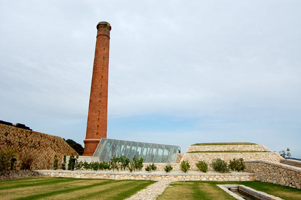
今回、はじめて訪れた犬島。丁度わたしが行ったときは人も少なくて、静かで、まだ計画途中な雰囲気もあって、初めて直島に行ったときの感動がふつふつと浮かんだ。今の直島はちょっと賑やかになり過ぎちゃったなと。
なにはともあれ、犬島は事前予約も必要だったり、交通手段が少なくて、乗船代が高かったりしてちょっと敷居の高い感じではあったのだけど、行って大満足だった。ちょっと無理をしてでも直島観光にプラスしても良いトコです。
≫イラストでの犬島観光記
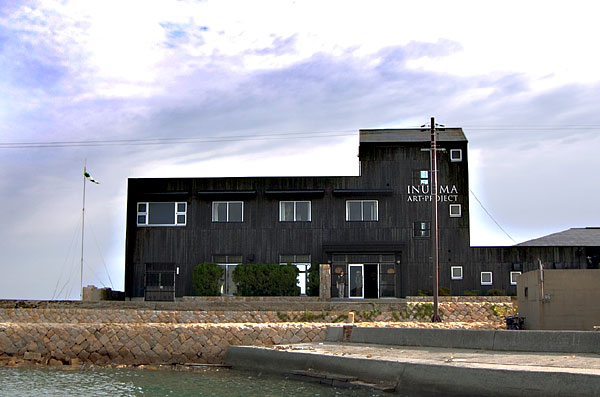
というわけで、私は直島宮浦港からシャトル便で犬島に上陸。港で出迎えるこの黒い建物が犬島アートプロジェクトの玄関。ガイドの人が手を振って出迎え。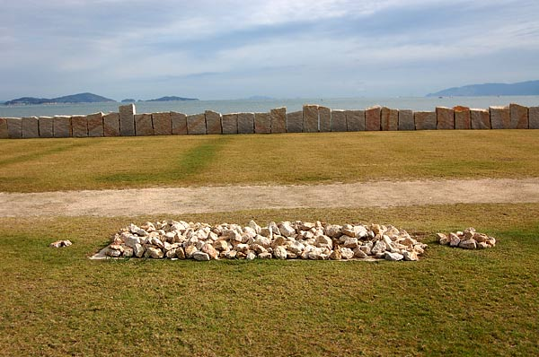
参加者は建物内で概要のレクチャを受けてから鑑賞に向かう。 精錬所までキレイに整備された芝の中を歩いていく。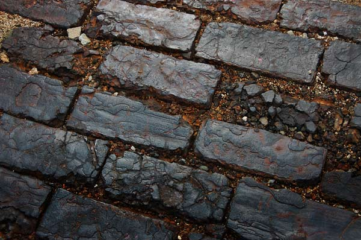
精錬所。この「カラミレンガ」を中心に構成された畏怖すら感じる重厚な一角。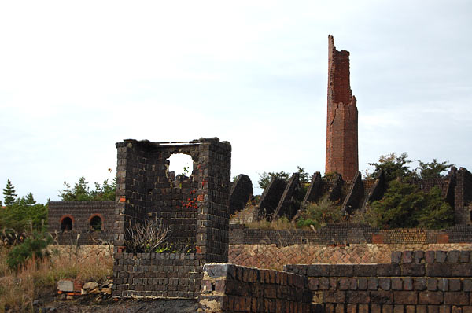
朽ちているものに美しさを感じるのはなぜなのだろうか？廃墟ブームも落ち着いたけれども、人の心をかき立てる廃墟への思いというのは皆持っているように思う。栄枯盛衰。力強く威厳を放っていたものは、どんなにそのものが朽ちていようとも、その土地にしっかりと存在感を焼き付けているように感じる。ときにはその時代の影が亡霊のように目の前に広がるような感覚すら感じる。
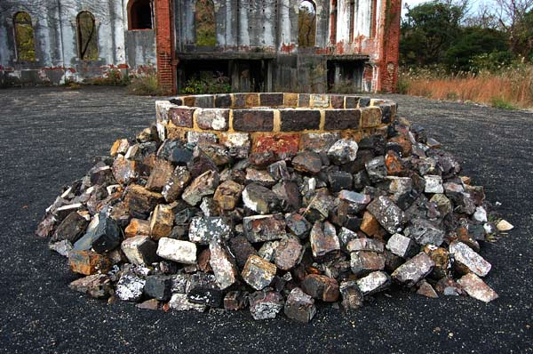
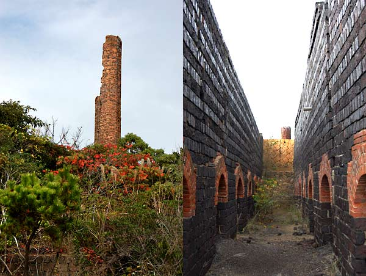
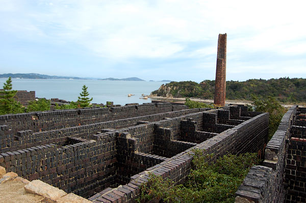
ほんの90年まえ。90年「も」と言われることが多いけど、90年なんてほんの少しの時間ではないのかな。30歳3回分。 でもそんな少ししか経っていなくとも大きな戦争や災害がなんどもおきて、頑丈な煉瓦造りの建物も元の意味を失って、今は眺めるだけのモノになってしまってる。でも、こうしてアートとして昇華させることができたのはやはり、「時代を作りだそうと」格闘していた活気がこの地が焼き付いているからかもしれない。
煌々とした溶鉱炉を中心に格闘する工員たちの影。カラミレンガの裏には、そんな見たこともない時代の残り香がのこっているかもしれない。
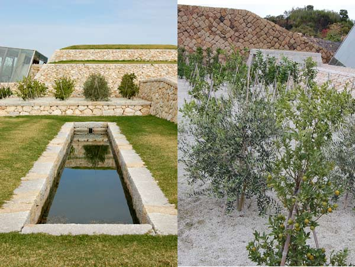
一度死んだともいえるこの精錬所は再生というキーワードのもと新たな時代を作り出そうとしている。「島産島消」循環システムで柑橘類やオリーブを栽培していた。
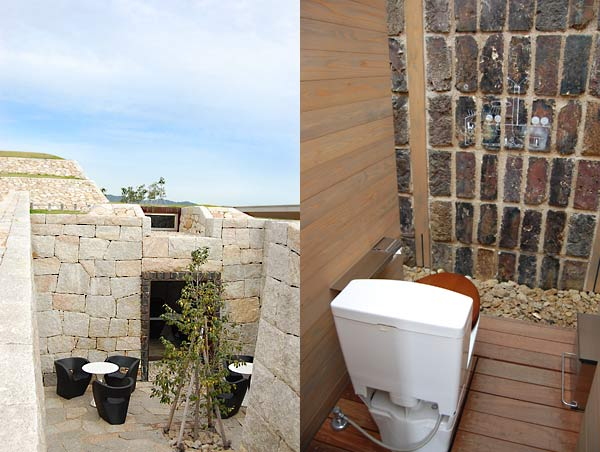
ラウンジ横のトイレは見たこともない構造。他の鑑賞者たちとわあわあきゃあきゃあと。こんなに盛り上がるトイレは生まれて初めてかも。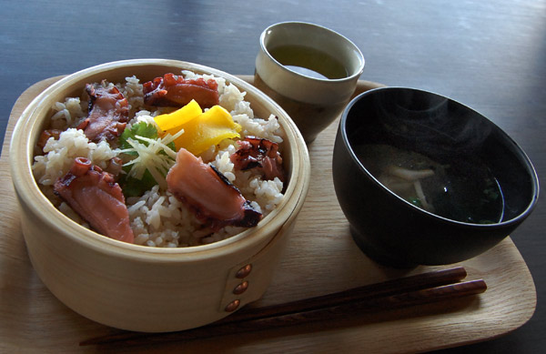
チケットセンターのカフェでたこめし。三つ葉と生姜のさわやかな香りと、蛸の旨みがうまく絡んで贅沢な一品。≫イラストでの犬島観光記